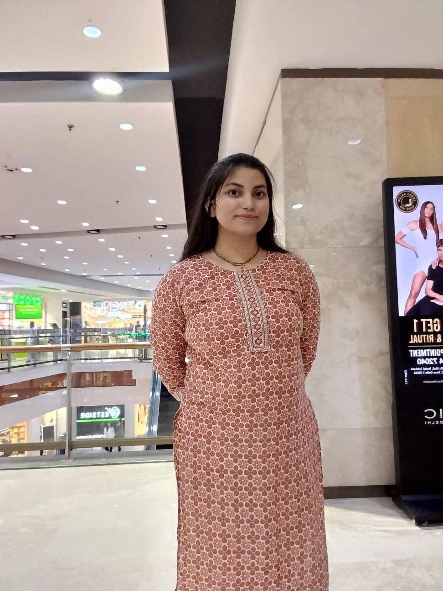

B.Tech Computer Science Student | Frontend & Android Developer | ML Enthusiast at IGDTUW.
Connect on LinkedIn
I am a passionate and driven Computer Science undergraduate at IGDTUW with a CGPA of 8.56. I specialize in frontend web development and have a growing expertise in Machine Learning.I also have worked in mobile app development field.
I deeply believe in leveraging technology to create meaningful social impact. Whether I am building accessible applications for the visually impaired, pitching sustainable innovations, or volunteering to educate underprivileged students, I thrive in environments that challenge me to solve real-world problems.
Current CGPA: 8.56
The Inspiration: After visiting a blind girls' hostel, I recognized the immense challenge visually impaired students face in arranging scribes for their exams.
The Solution: I pitched and developed a purpose-driven mobile application to bridge the gap between visually impaired students and volunteer scribes. I spearheaded the frontend development using Android Studio and web tools.
Key Features: Implemented a smart matching and emergency-alert system that prioritizes requests based on the user's exam date and location.
Conducted research and applied ML algorithms to academic datasets. Assisted in data preprocessing, model training, and evaluation.
Volunteered to educate underprivileged students. Awarded "All Rounder" among Star Performers for exceptional effort, sincerity, and community contribution.
Spearheaded PR and outreach strategies, handled communications, and managed event promotions.
Honored to successfully represent the voice of Rajasthan (Vasundhara Raje) in the National Commission for Women (NCW).
Reached the finals in the "Sustainability & Green Innovation" theme by pitching an innovative idea centered around bioink.
Emerged as a finalist in a global case competition that saw over 1,300 entries worldwide.